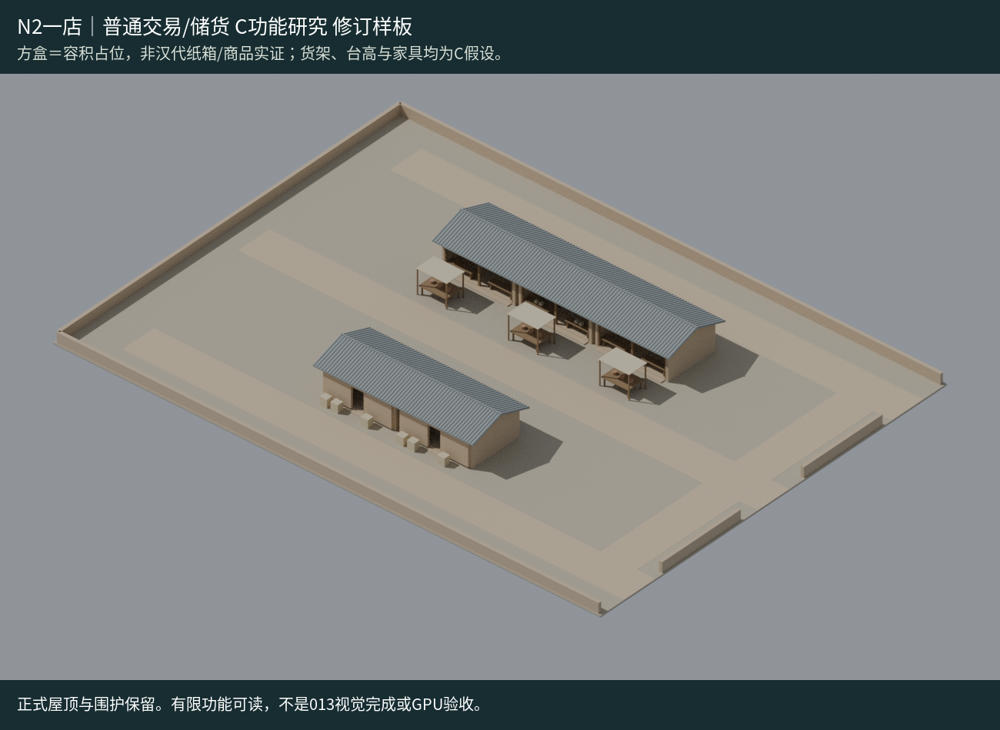

功能组 / 研究中 · 设计评审待完成
市肆功能组
REALTIME MODEL模型研究 · 设计待评审

模型预览图 · 代表方案进入详情后仅加载所选模型。拖动旋转、双指或滚轮缩放；方向键旋转，＋/－缩放，R复位，Esc关闭。
五店三摊为一个逻辑资产；N2单店和人货A/B作为版本补丁，不新增库存条目。
坐标/原点：独立market-A-N2-local-v1从场景根减实际锚点[214.28599548339844,0,-1959.1839599609375]；+X东/+Y高/-Z北。部分原POSITION仍绝对，根抵消不是全顶点重烘。完整A+N2不含外151m城路，城市仍用原分件版本。
来源版本
城市基础v1 + N2/flow；独立market-A-N2-local-v1
城市实际引用
已引用market v1＋N2替换；A共用入口默认，B绕行可选；外151mC支线共享。
可复用范围与未解决项
非完整金市/西市，60×44不是市界。箱体陈设C占位；回程会车/GPU/013质量未验。 完整独立候选已含基础建筑+N2，不可与原base/N2同时加载；524活跃网格/18296三角。B仍仅可选补丁，先卸7路再装6路；源实际imageCount0，纯材质不虚构PBR纹理。
有限变体与版本
展开逐型参数、边界与限制
[
{
"name": "A默认",
"meaning": "保留共用冲突"
},
{
"name": "B候选",
"meaning": "北货路47→130示意米，外路仍共享"
}
]实际资产文件
SHA可核验；独立GLB不自动执行城市补丁。完整原生源另有私有归档，本页不暴露内部ID或临时下载地址。
- 独立完整A+N2 local-v1（不叠base/N2） · 1088036B
SHA256
493798b8f09f594bb2ed3015b0db273e15badd3c7a62a99f9bdda1738880c707 - 局部B补丁：先精确卸7个A路径 · 9224B
SHA256
40f3fef9a52af742e2df71a684a4a61c7c21d9ea79760cb6b894bf27c371de56 - v1基础组（不含N2补丁） · 1031928B
SHA256
77b8bf2e9e1488df02c99ffa1b83af9517fabbb23e9d6b7f86dd3c3361c5a5c8 - N2补丁：必须先精确卸原30节点 · 72984B
SHA256
d33cbad1ea14e9436219e895791aafa3c4de20dfe7648635909d6b734e1c99d1 - B补丁：必须先精确卸A的7路径 · 9344B
SHA256
43d7799f85feccb0d6f1e0412c46853e6b3339535e38a9b806e8c5d3898f845e
完整独立A＋N2复用候选
精确组装/根原点/逆矩阵 · 有限往返 · B互斥替换检查 · Blender读回。完整候选已含N2，不双加载；A默认/B可选，城市未改。